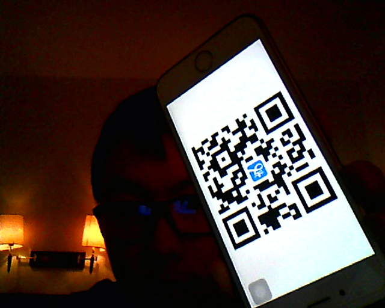
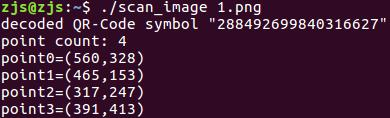
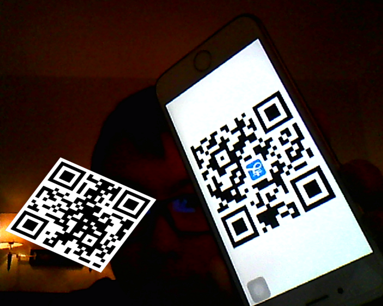
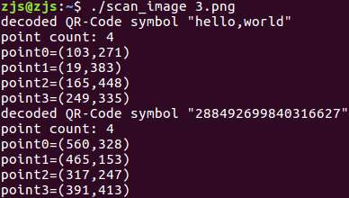
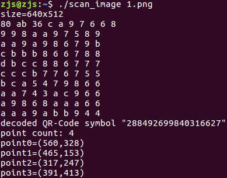

之前整个项目用的是Java，结果在树莓派上运行速度很慢。现在要用C++来改写。Java平台上我是使用ZXing来识别二维码的，ZXing是一个纯Java实现，所以也就没法用在C++中。于是我找到了Zbar，它的核心是用C写的。据说Zbar的性能是ZXing的两倍以上～
要使用Zbar，首先肯定是要安装Zbar库。当然也可以使用源码安装，虽然我没有成功......
sudo apt install libzbar-dev
之后，就可以编写一个测试代码：
scan_image.c
#include <stdio.h>
#include <stdlib.h>
#include <png.h>
#include <zbar.h>
#define zbar_fourcc(a, b, c, d) \
((unsigned long)(a) | \
((unsigned long)(b) << 8) | \
((unsigned long)(c) << 16) | \
((unsigned long)(d) << 24))
#if !defined(PNG_LIBPNG_VER) || \
PNG_LIBPNG_VER < 10018 || \
(PNG_LIBPNG_VER > 10200 && \
PNG_LIBPNG_VER < 10209)
/* Changes to Libpng from version 1.2.42 to 1.4.0 (January 4, 2010)
* ...
* 2. m. The function png_set_gray_1_2_4_to_8() was removed. It has been
* deprecated since libpng-1.0.18 and 1.2.9, when it was replaced with
* png_set_expand_gray_1_2_4_to_8() because the former function also
* expanded palette images.
*/
#define png_set_expand_gray_1_2_4_to_8 png_set_gray_1_2_4_to_8
#endif
zbar_image_scanner_t *scanner = NULL;
/* to complete a runnable example, this abbreviated implementation of
* get_data() will use libpng to read an image file. refer to libpng
* documentation for details
*/
static void get_data (const char *name,
int *width, int *height,
void **raw)
{
FILE *file = fopen(name, "rb");
if(!file) exit(2);
png_structp png =
png_create_read_struct(PNG_LIBPNG_VER_STRING,
NULL, NULL, NULL);
if(!png) exit(3);
if(setjmp(png_jmpbuf(png))) exit(4);
png_infop info = png_create_info_struct(png);
if(!info) exit(5);
png_init_io(png, file);
png_read_info(png, info);
/* configure for 8bpp grayscale input */
int color = png_get_color_type(png, info);
int bits = png_get_bit_depth(png, info);
if(color & PNG_COLOR_TYPE_PALETTE)
png_set_palette_to_rgb(png);
if(color == PNG_COLOR_TYPE_GRAY && bits < 8)
png_set_expand_gray_1_2_4_to_8(png);
if(bits == 16)
png_set_strip_16(png);
if(color & PNG_COLOR_MASK_ALPHA)
png_set_strip_alpha(png);
if(color & PNG_COLOR_MASK_COLOR)
png_set_rgb_to_gray_fixed(png, 1, -1, -1);
/* allocate image */
*width = png_get_image_width(png, info);
*height = png_get_image_height(png, info);
*raw = malloc(*width * *height);
png_bytep rows[*height];
int i;
for(i = 0; i < *height; i++)
rows[i] = *raw + (*width * i);
png_read_image(png, rows);
}
int main (int argc, char **argv)
{
if(argc < 2) return(1);
/* create a reader */
scanner = zbar_image_scanner_create();
/* configure the reader */
zbar_image_scanner_set_config(scanner, 0, ZBAR_CFG_ENABLE, 1);
/* obtain image data */
int width = 0, height = 0;
void *raw = NULL;
get_data(argv[1], &width, &height, &raw);
/* wrap image data */
zbar_image_t *image = zbar_image_create();
zbar_image_set_format(image, zbar_fourcc('Y','8','0','0'));
zbar_image_set_size(image, width, height);
zbar_image_set_data(image, raw, width * height, zbar_image_free_data);
/* scan the image for barcodes */
int n = zbar_scan_image(scanner, image);
/* extract results */
const zbar_symbol_t *symbol = zbar_image_first_symbol(image);
for(; symbol; symbol = zbar_symbol_next(symbol))
{
/* do something useful with results */
zbar_symbol_type_t typ = zbar_symbol_get_type(symbol);
const char *data = zbar_symbol_get_data(symbol);
printf("decoded %s symbol \"%s\"\n",zbar_get_symbol_name(typ), data);
int pointCount=zbar_symbol_get_loc_size(symbol);
printf("point count: %d\n",pointCount);
int i;
for(i=0;i<pointCount;i++)
{
int x=zbar_symbol_get_loc_x(symbol,i);
int y=zbar_symbol_get_loc_y(symbol,i);
printf("point%d=(%d,%d)\n",i,x,y);
}
}
/* clean up */
zbar_image_destroy(image);
zbar_image_scanner_destroy(scanner);
return(0);
}
这段代码是我基于官方给的examples/scan_image.c略做修改得到的。官方的最新代码中，zbar_fourcc这个宏定义是zbar.h自带的，可是我通过apt安装的zbar库可能版本落后，没有这个宏定义，所以我就只能复制了一份过来。
我承认一开始看这段代码还是有点抵触的，但是研究透彻了以后觉得还是很清晰的。这段代码获取命令行的参数作为一个文件名，然后使用png格式读取图片，并转换成一张灰度图，然后使用zbar库来识别图中的码（可能是条形码也可能是二维码），依次输出每一个码的类型、内容和定位点。
gcc scan_image.c -lpng -lzbar -o scan_image
一句命令就可以编译这段代码了，然后产生一个scan_image可执行文件。接下来准备一张包含二维码的png图片，比如下面这张：
1.png

然后运行scan_image：
./scan_image 1.png
可以看到如下输出:

说明zbar成功识别了图中的二维码。当然，还可以使用这一张P过的图片：
3.png

然后运行scan_image：
./scan_image 3.png
可以看到如下输出:

如果读了get_data()的代码，那么可以发现它的作用是把一张png图像转成了raw数组，而这个raw数组是这么来的：
void *raw = NULL; //... *raw = malloc(*width * *height);
而*width和*height分别是图像的宽和高。因此，一个字节代表了一个像素，所以我立刻猜测这个字节很可能就是这个像素的灰度值。接下来我做了一个实验来验证我的想法。我在
get_data(argv[1], &width, &height, &raw);
之后添加了这么一段代码：
printf("size=%dx%d\n",width,height);
int x,y;
for(y=0;y<10;y++)
{
for(x=0;x<10;x++)
{
int pixel=((unsigned char*)raw)[y*width+x];
printf("%x ",pixel);
}
printf("\n");
}
这段代码先打印图片的宽和高，然后把最左上角一个10x10的方块内的值打印出来。接着，我把1.png中(0,0)位置的像素点涂成了#808080,(1,0)位置的像素点涂成了#ababab，(2,0)位置的像素点涂成了#ff0000。如图：
再次运行，程序输出结果为：
很明显，raw数组中保存的确实是灰度矩阵。至于RGB是用何种算法变成灰度的，还需要具体研究一下。不过至此已经能够知道，只要获取了一个灰度矩阵，就能用Zbar方便地解析其中的条码或者二维码了。